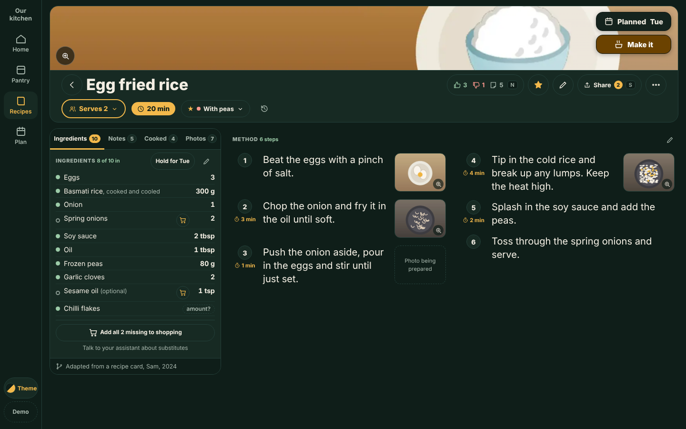
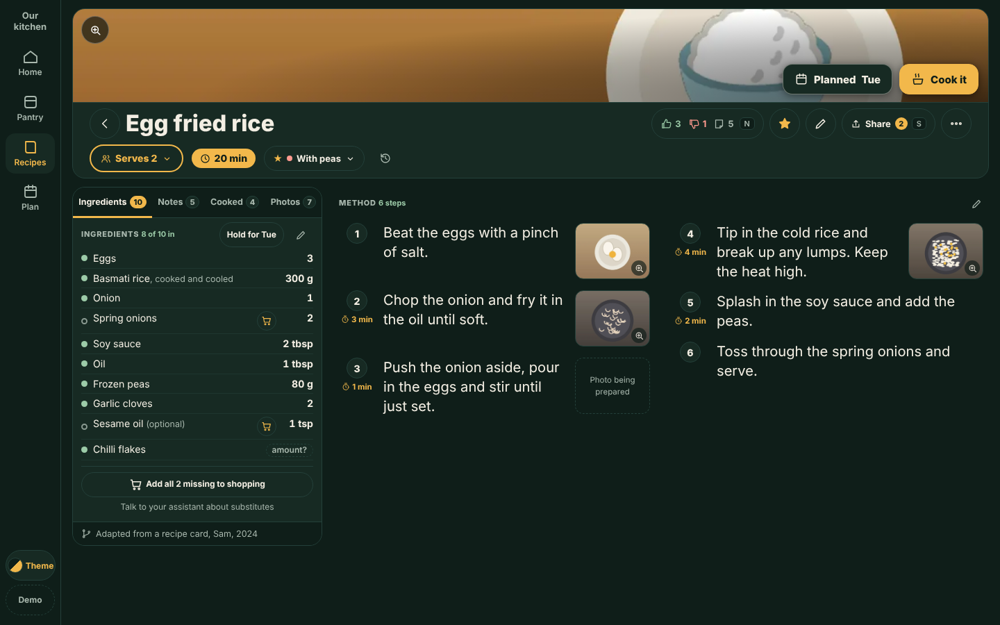
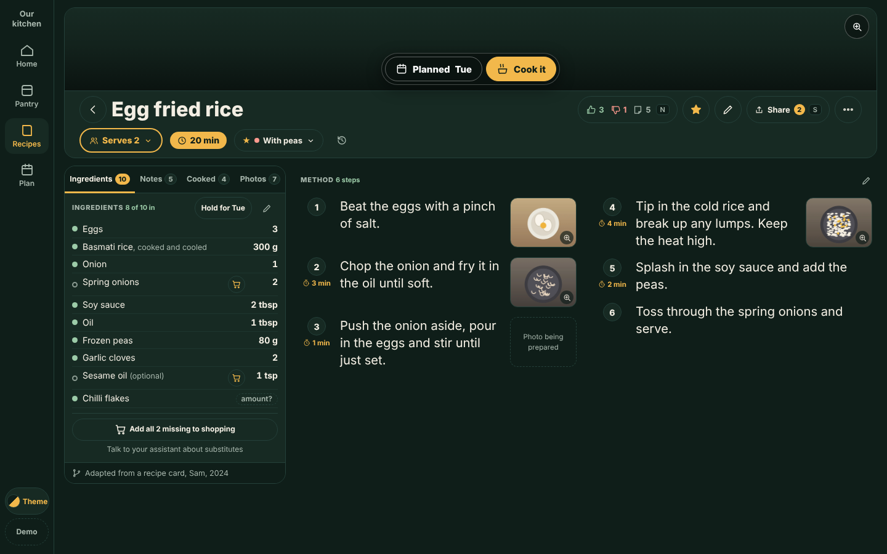

‹ Recipe page, desktop layout options
Plan it and Make it on the banner
Fragment. The owner asked (by voice, 18 October 2026) for Plan it and Make it to sit directly on the hero banner image, always visible and not shown on hover, instead of the right side of row two. He chose option C (top-right stacked buttons), rejected B ("yucky") and A ("insensible"), and asked that the contrast adapt to the photo instead of using a fixed dark scrim. Variations of the recommended page; each changes only that. Mockup stage only, not approved for build. Kitchie issues #830 and #898. C chosen, mockup stage
What is the same in all three
- Buttons are solid (or dark glass with white text), 44px tall (36px on a very short banner), readable over a light, a dark and a black and white banner photo. In C the style adapts to the photo.
- The whole banner opens the photo viewer (click or Enter), with a visible magnifier in a corner the buttons do not use. It is the first tab stop; Plan it and Make it stay after the History icon, so the keyboard order is exactly today's.
- Row two keeps Serves, the time badge, the version chip and History, left aligned. The hero is 4px shorter (190 instead of 194 at 1280x720): the Serves button is 40px, so row two barely shrinks.
- No banner (owner, 24 October 2026, RD-NB1 to RD-NB4): nothing is overlaid; Plan it and Make it swap rows with the Share / Like socials, so the two action buttons are on top (right of the title) and the socials drop to row two. See it; screenshots in
c/adaptive/nobanner-swap-*.png.
The three options: C chosen, A and B rejected (both stay viewable)

Plan it above Make it in the top-right corner (a single row when the banner is shorter than 112px, as at 1280x720); keeps the bottom of the photo clear. The buttons sample the banner behind them and switch between a light and a dark style, so they stay legible over any photo.

Owner, 18 October 2026: "insensible".
The same two buttons as today, moved onto the banner's bottom-right corner over a corner scrim; the nearest thing to where they were.

Owner, 18 October 2026: "yucky".
One dark glass capsule holding both buttons, centred along the bottom edge; the most legible over any photo (white text on at worst a 10:1 backing).
Decision, 18 October 2026 (owner, by voice)
C. Top-right stacked buttons. B was "yucky", A "insensible". Contrast must be handled adaptively: sample the brightness of the banner behind the buttons and switch between a light-on-dark and a dark-on-light button style, instead of the fixed dark scrim. The button is also now called Make it (not Cook it), which works for baking and cocktails. Claude's earlier suggestion (A) was not taken. Status: mockup stage, not approved for build.
How the adaptive contrast works (C)
- Sample: the banner is drawn to a 32px canvas for just the part behind the stack (mapped through object-fit and object-position, so the crop and a resize are right); mean, 10th and 90th percentile relative luminance are read.
- Style: a dark region gets light buttons (cream Plan it, amber Make it, white edge); a light region gets dark buttons (ink Plan it, deep amber Make it, near-black edge). Hysteresis: it switches to dark buttons above luminance 0.24 and back only below 0.15, so a resize across the line does not flicker.
- Contrast kept: label text 8.7 to 9.6:1 (AA needs 4.5); button edge at least 3:1 against the worst pixel behind it, measured in the tests on the rendered page.
- Scrim: none on a flat extreme; a subtle 30% (50% if still short of 3:1) backing in the opposite tone for mid-tone or busy regions.
- Fallback: if the image cannot be read (a cross-origin image without CORS taints the canvas), has not loaded or has no size, C shows the fixed look, theme buttons on the fixed dark corner scrim.
?adaptive=off forces it for comparison.
- Motion: .28s transitions on button colours and the scrim; none under prefers-reduced-motion.
Weak spots
- The sample banners put the dish right of centre, so A and C cover part of the plate on the sample photos. In the app the banner is a crop with a focus point; the button corner should follow it or be chosen once for all.
- The banner is 84px tall at 1280x720 (the page's own rule). Buttons fit with 20px to spare; under 68px they shrink to 36px (tested at 56px). Nothing in the page makes the banner shorter than 84px.
- The photo viewer behind the banner is the Photos tab's viewer; the recommended page had no banner click before, so this is new in all three.
- The brief said the title and share row sit above the banner; in the current recommended page the banner is on top and the title row is below it. That order is kept.